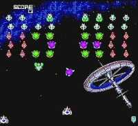

Galaga '90


Galaga '90 |
|
System: TurboGrafx-16 |

Game Type: Overhead-View Shooter

Based on the classic 80's shooter and a port of the arcade's Galaga
'89 (the only thing changed is the year). Little insects fly into
formation at the top of the screen and your ship at the bottom must
blast them while moving left and right to dodge their shots and kamikaze
dives (no up or down movement). Some enemies can capture your ship with a
tractor beam, but if you blast its captor you can free your ship for
double (or triple) the firepower.
Gameplay: 90/100
All the frenetic action of the original Galaga with new gameplay
features. The basic game is the same; the enemies fly into formation and
then dive at you one by one. Blast them all and you clear the stage. The
bonus rounds with the madly weaving ships are intact, too. Everything has
received minor upgrades, though. There are several new enemy types, like
the metallic crabs that can shield the rest of the swarm or the fish that
can merge into one larger, more powerful creature. You can grab warp field
generators to take you to a harder version of the next stage with
different enemies. The bonus round targets now dance in time to any of
several classical pieces. If you free two docked ships that were captured
with a tractor beam, you can combine with them to get a triple shot. There
are even scrolling sequences and bosses. G90 is every bit as
addictive as the original, because it remains faithful to the proven
formula.
Graphics: 90/100
The graphics were naturally upgraded as well. The enemies and
backgrounds are very colorful, and the fireworks-like explosions are
fantastic. The look is a pleasant mix between cutesy Japanese style and
the seriousness of rendered graphics. The animation for rotating enemies
is very smooth. This game is as much a pleasure to look at as it is to
play.
Sound: 80/100
Although the audio is nothing to get excited about it certainly
doesn't sound bad. The sound effects consist of little pops for exploding
enemies and zapping sounds for the shots; very simplistic but completely
appropriate for the game. There is no music in the main stages but in bonus
rounds classical tunes play (and the enemies are choreographed to move in
time with it - quite amusing).
Overall: 90/100
The tone isn't quite as serious as the original's but perhaps that's
one of G90's most endearing elements. It doesn't hurt that it's really
addictive, either. The addition of new enemies and different paths between
the stages adds an element of exploration to what was once a game played
strictly for the gameplay. It may be difficult to track a copy down, but
you can sample some of the bonus stages on the Playstation's Ridge Racer
Revolution. Then I recommend putting forth any effort necessary to locate
this card. I wouldn't blame you if you brag about it to your friends; a
modern game with classic gameplay is a rare find indeed.
|
|